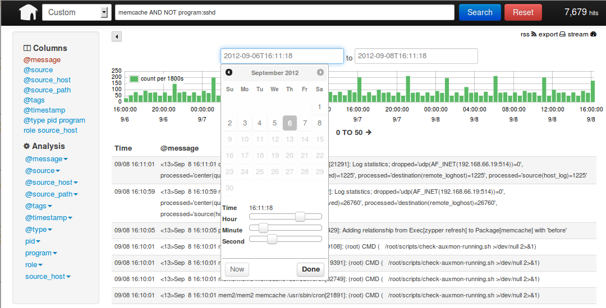

Details
Syslog evolution
Rsyslog default flat file ASCII log format is not exactly the most
efficient way for searching large volumes of data. For longer historical
retention as you can see below - it’s not so bad.
Logging into traditional relational databases is not scalable if your
amount of data gets higher then 1.000 - 2.000 events/second because of
missing full-text indexing and poor full-text search capabilities -
Search of Death.
Projects like Sphinx addresses this
issues but implementations are complicated. You have to adapt all SQL
based applications.
Logging is mostly done too unstructured. No consistent application log
schema or syntax, no consistent way of routing, filtering, indexing and
searching. No real standard on how to format and structure data on a
syslog message.
Log normalization with rsyslog
mmnormalize
helps to parse unstructured messages but further limitations are the
static database models.
It’s time for change.
Next generation databases
ElasticSearch is a new data storage
technology for dealing with tons of data. It’s also a search engine
built on top of Apache’s Lucene project.
It scales very well, both for distributed full-text indexing and
distributed searching.
It’s search engine’s data model is JSON, which is
the de-facto standard for representing data these days. It’s roots lie
with schema-free and document-oriented
databases,
and as shown by the NoSQL
movement, this model proves very
effective for building applications.
Moreover, with JSON it is simple to provide semi-structured
data with
complex entities as well as being programming language neutral with
first-level parser support.
Common Event Expression - CEE enhanced syslog
On syslog community also
interesting stuff is happening and more precisely on the topic of syslog
format extension and structuring syslog data.
The main idea about structuring syslog
messages
is to represent them using JSON along with the current free form strings
to prevent backward compatibility breakage. Therefore this format has to
be normalized and extended so that syslog softwares such as rsyslog and
syslog-ng can directly understand them. That’s where CEE enhanced
syslog and
Lumberjack kick in.
Our goal
The first part should be the rulebase which holds format representations
of expected log messages. This permits very high performance
normalization of semantically equal messages from different devices (and
thus in different syntaxes).
Parse and normalize events into structured JSON format via rsyslog
mmnormalize and mmjsonparse.
Rsyslog new omelasticsearch module ships your logs nearly in real time
into a ElasticSearch cluster by using ElasticSearch bulk API for
indexing. With bulk mode, message processing is much faster, especially
if large loads are to be processed.
Kibana user frontend queries the REST interface of ElasticSearch. It
provides enterprise wide
full-text search and allows you to plot,
calculate and drill down into your rsyslog timebased indexed logging
data.

Enjoy the performance, it’s very awesome - really.
Why not just archive everything in ElasticSearch?
That’s an option, however rsyslog flat files are much easier to handle.
Compressed rsyslog flat files are 90% or less of the size of compressed
ElasticSearch documents.
Assuming an average message lenght of 244 Byte per message and 10.000
events per second the following projection can give you an idea of
difficulties for suitable filesystem sizing:
| |
Benchmark |
second |
minute |
hour |
day |
week |
month |
year |
| Messages |
|
10 k |
600 k |
36 M |
864 M |
6.048 M |
181.440 M |
2.177.280 M |
| Compressed data size |
omfile |
0.03 MB |
1.74 MB |
104.40 MB |
2.45 GB |
17.13 GB |
68.51 GB |
822.15 GB |
| Compressed data size |
omelasticsearch |
3.50 MB |
210.00 MB |
12.30 GB |
295.31 GB |
2.02 TB |
8.07 TB |
96.90 TB |
For further details have a look into ELMA performance and compression
tests.
If you have a large volume of logs and you intend on keeping them around
for compliance reasons for a long period of time archiving in rsyslog
flat files allows longer historical retention.
Why ELMA?
Provided as an preinstalled openSUSE
appliance
which can be deployed and customized in a few
minutes ELMA comes out of the box with all necessary services, fine
customization and performance tuning and allows
easy adminstration and
operations:
- Parse events into structured JSON format
- Log router - route between different input and output sources
- Daily based indexes
- Optimization of time-based indices
- Logrotation (delete old indexes)
- Basic HTTP authentication on all backends and frontends
- Apache authentication, authorisation and accounting (AAA)
functionality
- LDAP and RADIUS integration
- SSL Offloading
- High availability
- Loadbalancing
- Single Logon
- Admin interfaces
- Design your own custom dashboards with configurable panels
- System monitoring due to Nagios Core integration
- Rsyslog and ElasticSearch and other serviceable probes
- Performance - ext4 filesystem
- Operation - bind, ntp, snmp and snmptrap integration
- performance and compression tests
- Flexible integrations - vmesx, xen, hardware
- Vertical and horizontal scalable
Look at ELMA Loadbalancing and Redundancy Guide
- a good starting point for understanding the communication matrix
inside ELMA.
Howto integrate into your existing logging and monitoring infrasructure?
Many organizations already have centralized syslog server and are
comfortable with collecting logs this way. There are many good reasons
to do this even if you want to use an infrastructure like ELMA provides.
Simply forward these syslog events to the central ELMA infrastructure to
combine the benefits of both sides without affecting legacy
applications.
Further event forwarding to your favorite SIEM system make sense!

{kind=link}